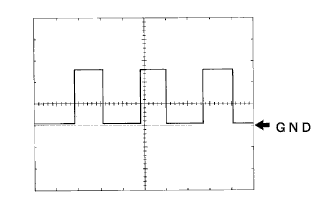
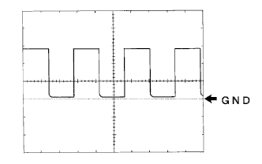

メーター&ゲージシステム ＥＣＵ端子配列 |
入出力信号点検
SST(トヨタエレクトリカルテスター)を使用して、コネクターを接続した状態で、テスター棒を車両ワイヤハーネス側コネクター裏側からあて、各端子間の電圧および導通を点検する。また、パルスを点検する場合はオシロスコープを使用する。
| 端子記号 [端子番号] | 入出力 | 項目 | 測定条件 | 基準 |
|---|---|---|---|---|
| AIR BAG←→ボデーアース [A1←→ボデーアース] | 入力 | 波形 | エアバッグウォーニング点灯→消灯 | 短パルス(60±5ｍｓ)→長パルス(130±5ｍｓ) |
| P-BELT SW←→ボデーアース [A2←→ボデーアース] | 入力 | 電圧 | IGスイッチON、助手席シート着座 かつシートベルト脱→着 | 1V以下→10-14V |
| D-BELT SW←→ボデーアース [A3←→ボデーアース] | 入力 | 電圧 | IGスイッチON、運転席シートベルト脱→着 | 1V以下→10-14V |
| A/T P←→ボデーアース [A4←→ボデーアース] | 入力 | 電圧 | A/T Pインジケータ消灯→点灯 | 1V以下→10-14V |
| A/T R←→ボデーアース [A5←→ボデーアース] | 入力 | 電圧 | A/T Rインジケータ消灯→点灯 | 1V以下→10-14V |
| A/T N←→ボデーアース [A6←→ボデーアース] | 入力 | 電圧 | A/T Nインジケータ消灯→点灯 | 1V以下→10-14V |
| A/T D←→ボデーアース [A7←→ボデーアース] | 入力 | 電圧 | A/T Dインジケータ消灯→点灯 | 1V以下→10-14V |
| A/T 2←→ボデーアース [A8←→ボデーアース] | 入力 | 電圧 | A/T 2インジケータ消灯→点灯 | 1V以下→10-14V |
| A/T L←→ボデーアース [A9←→ボデーアース] | 入力 | 電圧 | A/T Lインジケータ消灯→点灯 | 1V以下→10-14V |
| O/D OFF←→ボデーアース [A10←→ボデーアース] | 入力 | 電圧 | O/D OFFインジケータ点灯→消灯 | 2V以下→10-14V |
| SIGNAL(E/G)EARTH←→ボデーアース [A12←→ボデーアース] | - | 導通 | 常時 | 1Ω未満 |
| BEAM-←→ボデーアース [A13←→ボデーアース] | 入力 | 電圧 | ビームインジケータ消灯→点灯 | 1V以下→10-14V |
| FUEL←→ボデーアース [A14←→ボデーアース] | 入力 | 電圧 | IGスイッチON、燃料満-空 | 1V以下→4-7V |
| +B←→ボデーアース [A15←→ボデーアース] | 入力 | 電圧 | 常時 | 10-14V |
| IG2←→ボデーアース [A16←→ボデーアース] | 入力 | 電圧 | IGスイッチOFF→ON | 1V以下→10-14V |
| TEMP COOL←→ボデーアース [A17←→ボデーアース] | 入力 | 電圧 | IGスイッチOFF→ON | 10-14V→1V以下 |
| TEMP HOT←→ボデーアース [A18←→ボデーアース] | 入力 | 電圧 | IGスイッチOFF→ON | 1V以下→9-14V |
| CHG-←→ボデーアース [A19←→ボデーアース] | 入力 | 電圧 | チャージインジケータ点灯→消灯 | 4V以下→10-14V |
| TRC OFF*←→ボデーアース [A20←→ボデーアース] | 入力 | 電圧 | TRC OFFインジケータランプ消灯→点灯 | 10-14V→2V以下 |
| ILL+←→ボデーアース [A21←→ボデーアース] | 入力 | 電圧 | テールスイッチOFF→ON | 1V以下→10-14V |
| キーSW←→ボデーアース [A22←→ボデーアース] | 入力 | 電圧 | キーシリンダにIGキーなし→あり | 10-14V→1V以下 |
| P-BELT OUT←→ボデーアース [A23←→ボデーアース] | 出力 | 電圧 | 助手席シートベルトウォーニング点滅→消灯 | 1V以下→10-14V→1V以下 |
| SPEED SI←→ボデーアース [A24←→ボデーアース] | 入力 | 波形 | 車速20ｋｍ/ｈで走行 | パルス発生(波形1) |
| SPEED SI←→ボデーアース [A24←→ボデーアース] | 入力 | 電圧 | IGスイッチON、駆動輪をゆっくり回す | 1V以下→10-14V |
| 4P OUT←→ボデーアース [A25←→ボデーアース] | 出力 | 波形 | 車速20ｋｍ/ｈで走行 | パルス発生(波形1) |
| 4P OUT←→ボデーアース [A25←→ボデーアース] | 出力 | 電圧 | IGスイッチON、駆動輪をゆっくり回す | 1V以下→10-14V |
| TACHO←→ボデーアース [A26←→ボデーアース] | 入力 | 波形 | エンジン回転時 | パルス発生(波形2) |
| CTY(D)←→ボデーアース [A27←→ボデーアース] | 入力 | 電圧 | D席ドア閉→開 | 1V以下→10-14V |
| CTY(EXEPT D)←→ボデーアース [28←→ボデーアース] | 入力 | 電圧 | 運転席以外のドア閉→開 | 1V以下→10-14V |
| EBD←→ボデーアース [29←→ボデーアース] | 入力 | 電圧 | IGスイッチON後約3秒 | 約3秒間4-8V(その後1V以下) |
| BRAKE LEVEL SW←→ボデーアース [30←→ボデーアース] | 入力 | 電圧 | ブレーキレベル異常→正常 | 1V以下→10-14V |
| OIL P←→ボデーアース [A31←→ボデーアース] | 入力 | 電圧 | オイルプレッシャウォーニングランプ点灯→消灯 | 1V以下→10-14V |
| FUEL EARTH←→ボデーアース [A32←→ボデーアース] | - | 導通 | 常時 | 1Ω未満 |
| ABS←→ボデーアース [A33←→ボデーアース] | 入力 | 電圧 | IGスイッチON後約3秒 | 約3秒間4-8V(その後1V以下) |
| FR FOG←→ボデーアース [A34←→ボデーアース] | 入力 | 電圧 | IGスイッチON、FRフォグランプスイツチON | 1V以下→10-14V |
| TURN L←→ボデーアース A[35←→ボデーアース] | 入力 | 電圧 | ターン左インジケータ消灯→点滅 | 1V以下→1V以下←→10-14V |
| TURN R←→ボデーアース [A36←→ボデーアース] | 入力 | 電圧 | ターン右インジケータ消灯→点滅 | 1V以下→1V以下←→10-14V |
| BEAM+←→ボデーアース [A37←→ボデーアース] | 入力 | 電圧 | 常時 | 10-14V |
| CHK E/G←→ボデーアース [A38←→ボデーアース] | 入力 | 電圧 | チェックエンジンウォーニング点灯→消灯(チャージインジケータ消灯時) | 3V以下→10-14V |
| VSC*←→ボデーアース [A39←→ボデーアース] | 入力 | 電圧 | IGスイッチOFF→ON | 約3秒間2V以下その後10-14V |
| SLIP*←→ボデーアース [A40←→ボデーアース] | 入力 | 電圧 | IGスイッチOFF→ON | 約3秒間2V以下その後10-14V |
| 端子記号 [端子番号] | 入出力 | 項目 | 測定条件 | 基準 |
|---|---|---|---|---|
| AUTO LEVELING*←→ボデーアース [B6←→ボデーアース] | 入力 | 電圧 | IGスイッチON、ヘッドランプオートレベリングウォーニング点灯→消灯 | 2V以下→10-14V |
| PKB SW ←→ボデーアース [B10←→ボデーアース] | 入力 | 電圧 | パーキングブレーキON→OFF | 1V以下→10-14V |
|  |
波形1
| 項目 | 内容 |
|---|---|
| 測定端子 | SPEED SI、4P OUT←→ボデーアース |
| 計器セット | 5V/DIV、10ms/DIV |
| 測定条件 | アイドル回転時 |
|  |
波形2
| 項目 | 内容 |
|---|---|
| 測定端子 | TACHO |
| 計器セット | 5V/DIV、10ms/DIV |
| 測定条件 | アイドル回転時 |